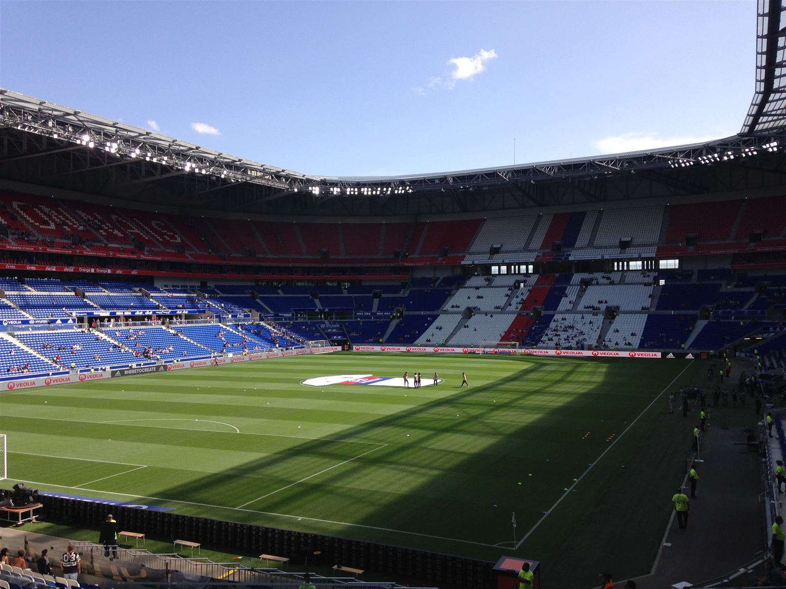

🔥 Sparta dnes hraje o mnohem víc než jen o postup
· Autor: Karel Zbíral
Sparta dnes ve 21:00 nastoupí v Lyonu k odvetě 3. předkola Ligy mistrů. Po domácí výhře 2:1 má před sebou posledních 90 minut boje o postup. A z pohledu českého koeficientu je ve hře opravdu hodně.

Foto: Zakarie Faibis, CC BY-SA 4.0, via Wikimedia Commons
Postup by znamenal ligovou fázi Ligy mistrů
Pokud Sparta Lyon vyřadí, čekají ji ještě dva zápasy play-off Ligy mistrů. Pokud by zvládla i tuto poslední překážku, dostala by se do ligové fáze Champions League, což znamená 6 bonusových bodů do národního koeficientu. Stejný bonus pro český fotbal už má za jistou účast v ligové fázi garantovaný Slavia.
Nejde jen o koeficient
Postup přes play-off do ligové fáze LM by Spartě přinesl také startovní prémii 18,62 milionu eur, tedy zhruba 452 milionů korun.
Pokud Sparta v Lyonu vypadne, do play-off LM se vůbec nedostane. Evropskou ligu má sice jistou, ale přijde o možnost bojovat o Ligu mistrů, o šestibodový bonus i o obrovskou finanční prémii za účast v hlavní fázi.
Případný soupeř v play-off
V případě postupu Sparta narazí na vítěze dvojzápasu Fenerbahçe – Sturm Graz. První utkání vyhrálo Fenerbahçe 2:0, takže právě turecký tým má před odvetou výrazně lepší výchozí pozici.
Pro český koeficient je tak dnešní zápas mimořádně důležitý. Sparta může přidat další dva zápasy v boji o Ligu mistrů, získat v nich cenné body a zároveň zůstat ve hře o šestibodový bonus za ligovou fázi.
Vypadnutí by naopak znamenalo jistotu Evropské ligy a konec cesty do letošní Ligy mistrů. Česko přitom potřebuje každý bod – náskok před Polskem je minimální. 🇨🇿⚽📊
Aktuální koeficient i to, o kolik bodů se vede, najdeš v aplikaci Coeff — zdarma, bez registrace.